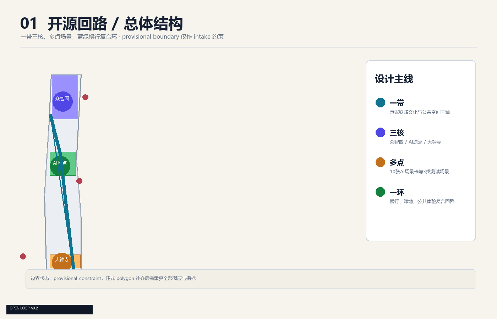
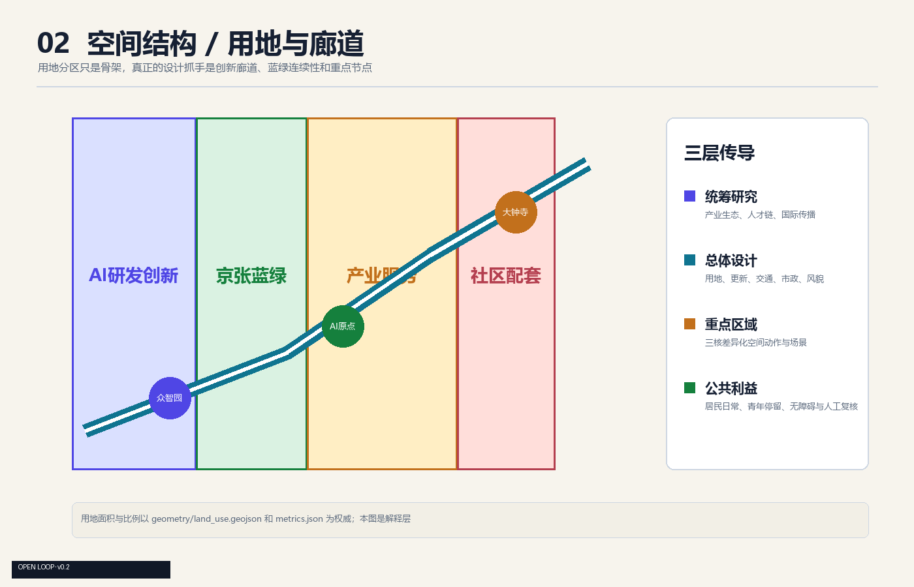
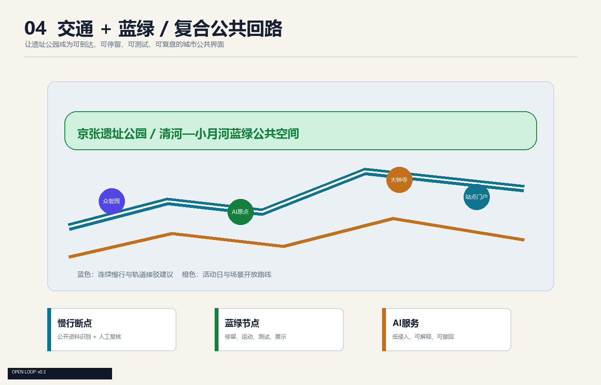
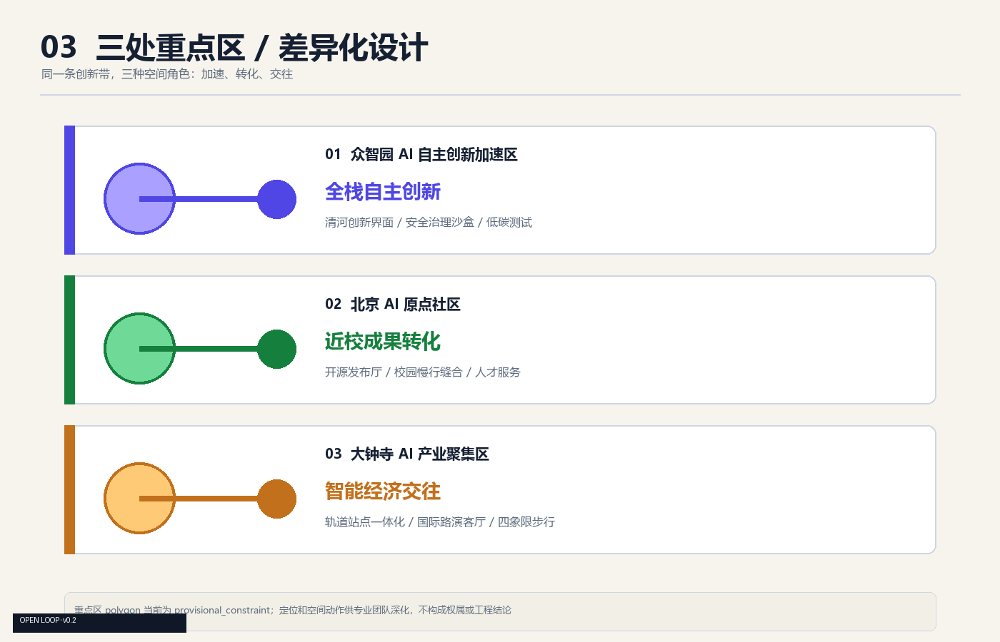
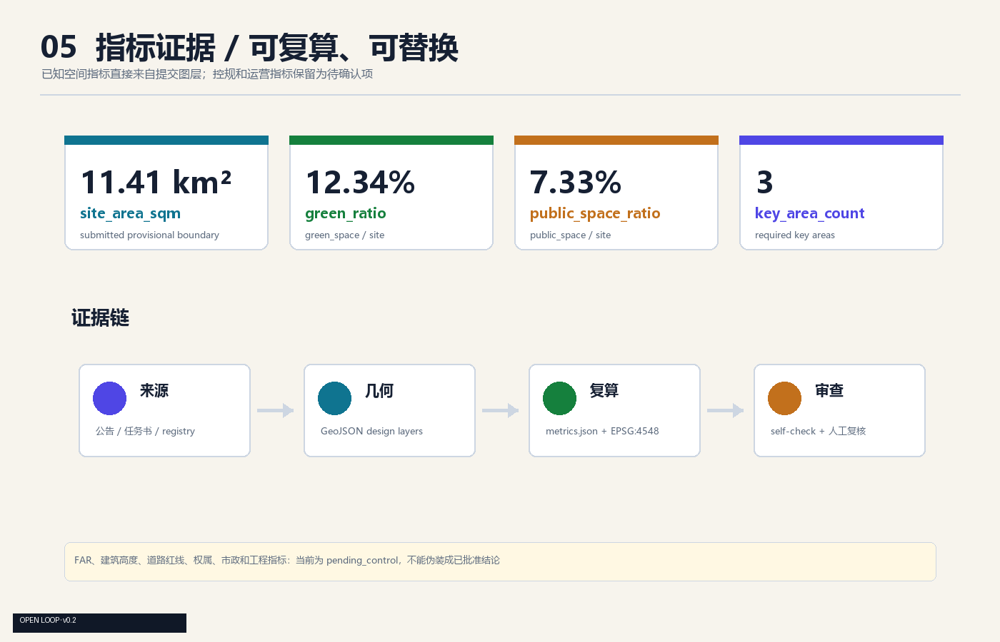

Design thesis
历史线路不只被保存，
它可以继续接入新节点。
京张铁路成为公共主轴，三处创新核心成为节点，慢行和蓝绿空间成为日常回路，AI 场景在低风险、可监管、可退出的公共界面中先行验证。
“开源回路”以京张文化主轴串起众智园、AI 原点社区和大钟寺三处创新核心，用慢行公共空间把 AI 产业、日常生活、文化叙事和人工复核接到同一条回路上。
评审者不需要先打开 JSON。首屏先给出设计判断，再把判断接到空间、指标和资料边界。
京张铁路成为公共主轴，三处创新核心成为节点，慢行和蓝绿空间成为日常回路，AI 场景在低风险、可监管、可退出的公共界面中先行验证。
一带、三核、多点、一环，把产业、文化和公共服务放进同一条步行叙事线。
1 + 3 + 10 + 1先开放公共界面，再用小尺度场景验证，最后等待正式边界和专业条件深化。
开放 → 验证 → 深化图层、指标、矩阵和 self-check 形成可追溯证据链，概念建议不冒充审批结论。
4 layers of proof展示页不替代数据源，它把人类阅读顺序和机器核验对象对齐。
四类材料各自承担一个角色，避免漂亮图面与结构化事实脱节。
边界、用地、建筑、道路、蓝绿空间和分期图层。
面积、绿地率、公共空间比和重点区数量。
公告任务、六项 agent 任务、标准和设计深度。
来源、假设、版权、隐私、实施条件和自检结果。
总览图讲总体概念，结构图讲空间关系。临时边界只做低对比约束，重点落在主轴、节点和公共空间。
京张文化主轴连接三处创新核心，蓝绿慢行网络把产业创新带回日常公共生活。

提出 AI 产业生态、三区两翼协同、未来城市形态和文化叙事。
组织城市更新、用地结构、交通市政、京张遗址公园活力带。
分别验证自主创新、近校转化和智能经济交往三种城市界面。

研发创新、京张蓝绿、产业服务和社区配套由公共廊道穿过，形成连续的日常交往骨架。

轨道门户、慢行回路和蓝绿公共空间构成低门槛接口，AI 节点先以轻量、可撤回方式测试。
重点区不是三个同款园区。每个区域都绑定定位、公共空间动作和正式资料补齐前的风险条件。

每张场景卡都回答服务对象、空间位置、数据边界和人工复核，避免把技术名词直接当成城市设计。
面向开发者、企业和高校的成果发布与模型评测节点。
在可控公共空间测试交通、服务和运维智能体。
解释端侧算力、能源和公共服务设施的关系。
用公开道路资料和人工巡查识别慢行断点。
承载企业展示、国际接待和人才招聘。
把生态条件、低碳技术和公共知识结合。
让科研成果、知识产权和日常生活共享界面。
展示合规案例，不展示个人或企业内部数据。
把医疗、教育、法律服务放在人工复核的日常界面。
将开发者节、场景开放日和城市体验组织为年度路线。
实施不是一次性造景，而是一条可以被复盘和退出的公共创新路径。
以公开资料、人工巡查和轻量公共空间动作验证真实需求。
把低风险 AI 场景放入可监管、可回溯、可退出的节点。
官方边界、控规、权属、市政、文保和专业条件齐备后再讨论工程。
| 项目 | 近期参考动作 | 主要前置条件 |
|---|---|---|
| JZ-01 | 慢行断点缝合，公开识别、人工巡查、轻量导视 | official 道路与交通条件 |
| JZ-02 | 清河创新界面，公共知识展示和低碳体验试点 | 河道蓝线、防洪、文保 |
| JZ-03 | 原点成果转化街，开源发布、路演和人才服务 | 校区边界、权属、业态 |
| JZ-04 | 大钟寺步行连通，活动日组织和信息导视 | 轨道、道路、市政 |
PASS 证明提交包具备机器检查和内容评审的基础，不代表官方批准，也不消除 provisional geometry 的限制。
当前数值都来自提交包的 provisional geometry 和概念设计图层。

把资料能支撑什么、不能支撑什么写在页面上，避免把概念设计误读成正式规划结论。
方案使用公告、Agent 任务书、站点资料包、公开来源登记和本地标准快照。每条来源的用途与限制写入 `sources.json`，正文以机器可读标签回引。
正式资格预审文件、精确 polygon、道路红线、控规、权属、市政、文保、生态和工程条件仍需专业复核。它们不应被 AI 自行补全。
当前 geometry 的 `official_boundary=false`、`geometry_role=provisional_constraint` 和 `boundary_precision=provisional_rough` 均保留在 GeoJSON 属性中。页面中的面积、比例、重点区和图面只支持本次 intake、讨论和自检，不构成法定规划、权属、审批或精确工程结论。
这份方案的下一步不是把假设藏起来，而是等更好的公开资料进来，再把整条回路重新复算一遍。